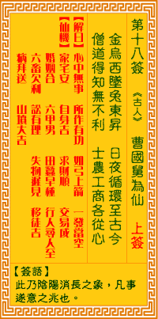

观音灵签第十八签 【曹国舅为仙】 |
 | |||
金乌西坠兔东临 日夜循环恒古今 僧道得之无不利 工商农士各开心 |
||||
| 【吉凶】 | 上上签 | 【宫位】 | 卯宫 | |
| 【签语】 | 此卦阴阳消长之象，凡事遂意之兆也。(金乌指太阳，玉兔指月亮) | |||
| 【解曰】 | 心中无事 所作有功 如弓上箭 一发当空 | |||
| 【仙机】 | 此签家宅安，自身吉，求财顺，交易成，婚姻合，六甲男，行人寻人至，田蚕早种，六畜欠安，讼有理，失物迟见，移徙吉，病拜送，山 坟大吉。 | |||
| 【详解】 | 太阳西沉月亮就初升，从古至今日夜交替循环不歇;僧道之士体悟了这种自然运行的法则因而无所罣碍，即便是士农工商三百六十行又有什么分别呢 心中无事，所作有功，如弓上箭，一发当中。此签皎月东升之象，凡事亨泰如意。 皎月当夜空，繇东方上升之象。爰之事事亨泰如意者。心中无事。所作皆奏功。又如上弓之一箭。发之即中也。君之今堪称如日月日夜循环亘古今。僧道得之无不利。因此。工商农士无不一一笑逐颜开者。 此签有”言之成理”之意。提醒当事人，勿过于主观。有些人本身通晓事理，加上对人事物观察入微，因此能够掌握先机，猜测事情的发展也往往不出所料。须知本身有一定的自信是必要且可喜的条件，但却不能太过或绝对地主观。过于主观在无形中会渐渐导致个人的自满自傲且无法接受其它不同的意见或批评。当知事情没有绝对，每个人的想法也随时都会改变。因此切忌光凭个人的角度来果断做决定或判断喜恶。仍应保持谦恭谨慎的态度，凡事客观、包容。 | |||
| 【典故】 | 曹国舅是八仙之一，宋朝人，曹太后的弟弟。其弟不守王法，常杀死人。国舅深感耻辱，于是散尽家财，周济穷人，自己进入山林修道。 后来遇汉钟离个吕洞宾，得到指点而成仙。《八仙》故事 | |||